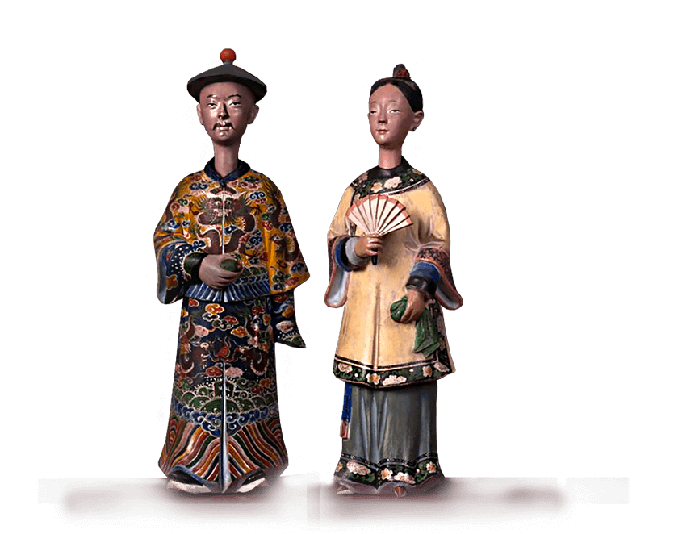

<div class="home-1">
    <div class="container">
        <div class="home-1__box">
            <div class="home-1__left">
                
            </div>
            <div class="home-1__right">
                
                <h1 class="home-1__title title-1">Впервые за 1 000 лет</h1>
                <p class="text">
                    В течении многих столетий жители Срединного Государства, китайцы,
                    почитали и молились могущественным духам Волшебных Лис.
                </p>
                <p class="text">
                    Волшебные Лисы прилетали из других измерений и обретались в дворцах
                    созвездий Большой Медведицы. Нефритовый император, Властитель
                    Вселенной посылал и сейчас посылает Волшебных Лис на Землю, что бы
                    познать благость или ничтожество людей.
                </p>
                <p class="text">
                    Сначала Волшебные Лисы принимают форму лесных лис, таков приказ
                    Нефритового императора. Затем, пройдя Тесты Наставников получают
                    магическую силу.
                </p>
                <p class="text">
                    Из лесных лис Волшебные Лисы превращаются в прекрасных дев или
                    мудрых стариков, в талантливых юношей или разумных чиновников,
                    сохраняя в этих формах свою волшебную силу.
                    Чаще всего Волшебные Лисы превращались в форму мудрых людей,
                    мужа и жены Мистер и Миссис Ху,
                </p>
            </div>
        </div>
    </div>
    <!-- /.container -->
</div>
<!-- /.home-1 -->